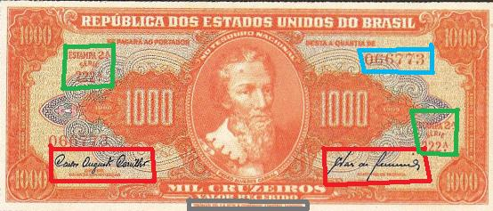

Introdução
Com este catálogo virtual, pretendemos oferecer aos colecionadores uma forma de consulta de qualidade, através de tabelas fáceis de compreender e imagens de alta resolução para auxiliar no mesmo. Claro que o trabalho ainda está na versão "beta", pois ainda não conta com uma média de preços, imagens frente e verso, etc...
Pretendemos que você possa compreender o conteúdo e - após passear por todo o site - possa identificar as cédulas com grande facilidade, e saber definir as de maior e menor valor. Na versão 2.0 de nosso website traremos um indicador de raridade, além de algumas outras coisas mais. Fique ligado pois já estamos trabalhando na mesma e em breve ela entrará no ar!
Bem, para que possa usufruir ao máximo deste catálogo, abaixo algumas instruções básicas para que você possa começar a identificar suas cédulas:
Entendendo a tabela
Para que você possa usar a tabela, primeiro precisa compreender algumas coisas da mesma. Abaixo, uma tabela de exemplo:
| Num |
Autógrafos e Chancelas |
Data |
Séries |
Tipo |
| 48 | Autografada | 1.943 | 001/230 | Valor Recebido |
| 49 | Claudionor de Souza Lemos / Horácio Láfer | 1.953 | 231/330 | Valor Recebido |
| 50 | Claudionor de Souza Lemos / Eugênio Gudin | 1.955 | 331/630 | Valor Recebido |
| 51 | Claudionor de Souza Lemos / José Maria Whitaker | 1.955 | 631/930 | Valor Recebido |
| 52 | Claudionor de Souza Lemos / Lucas Lopes | 1.958 | 931/1080 | Valor Recebido |
| 53 | Affonso Almiro / Lucas Lopes | 1.959 | 1081/1330 | Valor Recebido |
| 54 | Carlos Augusto Carrilho / Clemente Mariani | 1.961 | 1331/1730 | Valor Legal |
| 55 | Reginaldo Fernandes Nunes / Walter Moreira Salles | 1.962 | 1731/3030 | Valor Legal |
| 56 | Reginaldo Fernandes Nunes / Miguel Calmon | 1.963 | 3031/3830 | Valor Legal |
Identificando a cédula

Circuladas em vermelho, estão as chancelas. Circuladas de verde, estão a estampa e a série. Circuladas de azul está o número de série da cédula. Circulada de cinza, está o órgão impressor, outra excelente forma de indentificar a estampa, caso o indicador de estampa esteja apagado. Outra maneira é a cor: a de 100 cruzeiros da segunda estampa é vermelha, a de 1000 laranja, a de 5000 é avermelhada. As outras variam de azul para verde, fundo laranja ou ocre (2 cruzeiros), etc... Portanto, é mais fácil identificar pela série.
Hora de colocar o que aprendemos em prática. Usaremos a cédula acima como material. Abaixo a tabela da Segunda Estampa da cédula de 1000 cruzeiros. Descobrimos que ela é da segunda estampa devido ao que está circulado de verde e marrom:
| Num |
Autógrafos e Chancelas |
Data |
Séries |
Tipo |
| 104 |
Autografada |
1949 | 001/090 | Valor Recebido |
| 105 |
Carlos Augusto Carrilho / Sebastião P. de Almeida | 1960 | 091/790 | Valor Recebido |
| 106 |
Reginaldo Fernandes Nunes / Miguel Calmon | 1963 | 791/1590 | Valor Legal |
Vê-se, então, já que o número de série dela é 222, que pertence ao número 105, com as chancelas de Carlos Augusto Carrilho e Sebastião P. de Almeida, dos anos 1960. Viu como é fácil identificar as cédulas?
Conclusão
Ao ler a introdução, você já é capaz de entender a tabela e já saberá reconhecer as suas cédulas e a catalogá-las. Na seção de downloads há um catálogo em Excel que pode ser impresso para lhe ajudar ainda mais a identificar as cédulas. A numeração ainda não foi padronizada, mas em breve isso será corrigido. Para entender um pouco mais de cédulas, saiba mais sobre os órgãos impressores, sobre a numismática, sobre o projeto da kNumismática, sobre os estados de conservação e conheça todas as cédulas em nosso banco de imagens.
As imagens foram retiradas do livro "Cédulas Brasileiras de 1942 à 1991" e podem estar sobre copyright. Estão sendo aqui usadas como ferramenta de consulta.
Website desenvolvido em HTML 5, a linguagem do futuro! Feito em Adobe ™ Dreamweaver ® CS 5.5